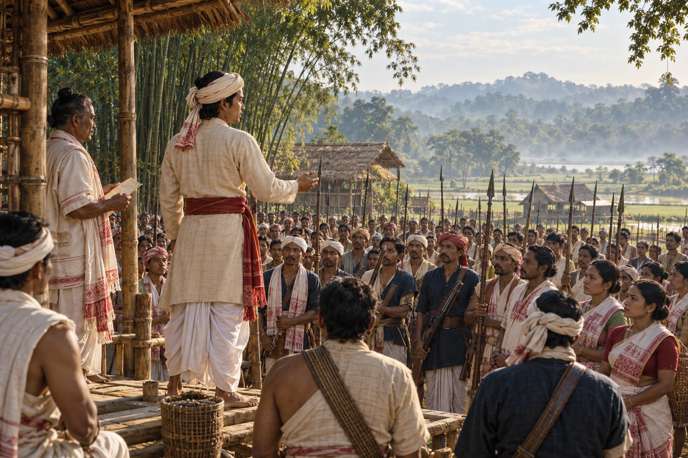

Gomdhar Konwar's Revolt
1828 · The last Swargadeo

Former Ahom nobles led by Dhananjoy Borgohain crown the prince Gomdhar Konwar near Jorhat and march on Rangpur. Lieutenant Rutherford's troops defeat them; Gomdhar is captured and banished. The first armed rising against British rule in Assam.
Selects the revolt’s mobilisation rather than a documented coronation ceremony or battle.
Sources
People:
Open this scene in the interactive archive · Follow this event on MAP